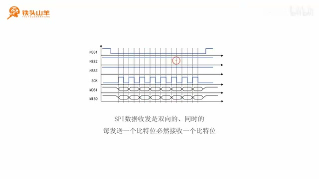
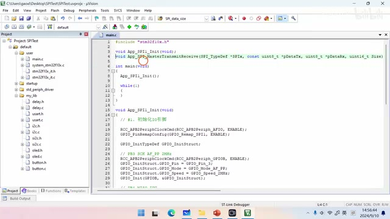
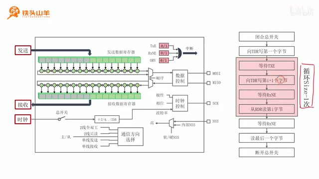
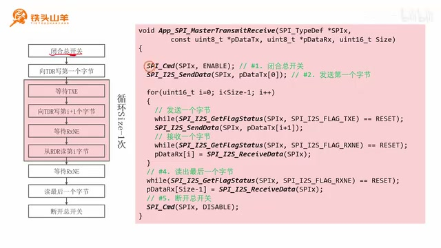
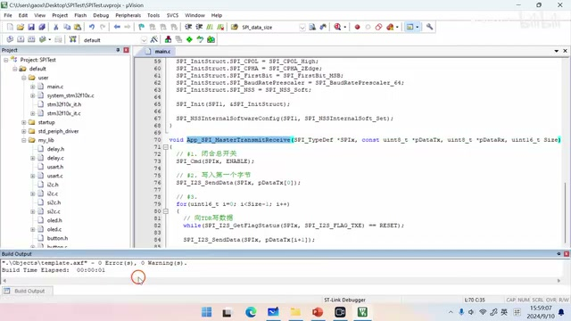

P030 · 5.6 （SPI）数据收发¶
课程安排与 SPI 数据收发特点¶
大家好，我是铁头山羊。今天学习第五章第六节，通过 SPI 总线收发数据。本套视频需要的材料都包含在开发套件包里，屏幕上有二维码，可以扫描进入淘宝店铺购买。购买套件后，可以获得课程全部课件和源码，也可以加入答疑群直接交流。
本期分四部分：先简单介绍 SPI 数据收发的特点；再声明一个用于 SPI 数据收发的编程接口；接着简单介绍 SPI 总线数据收发的过程；最后编写数据收发代码。现在先从 SPI 总线的特点开始，看一下通信时的实际波形。

SPI 波形图标出了 NSS、SCK、MOSI 与 MISO，展示主机时钟驱动下的同步双向传输。 · 原片 01:06
图中的 SPI 总线包括 MOSI（主发从收）、MISO（主收从发）、SCK 串行时钟和 NSS 片选信号。要和哪一个从机通信，就把对应的 SS 引脚拉低。随后主机通过 SCK 向从机发送时钟信号；每个时钟周期里，主机通过 MOSI 向从机发送一个比特，与此同时，从机也通过 MISO 向主机发送一个比特。
所以，SPI 和之前学过的串口、I²C 最大的不同，是数据收发必须双向、同时进行：主机每发送一个比特给从机，就必然从从机收到一个比特。接下来会用这个特点来理解后面的收发过程。
不只是每发送一个比特就收到一个比特；发送一个比特就会收到一个比特，发送一个比特仍然会收到一个比特。主机向从机发送多少字节，就会从从机收到多少字节。这是 SPI 通信最大的特点，大家一定要牢记。只有理解它，才能继续讲后面的 SPI 数据收发过程。
声明数据收发接口¶
刚才简单了解了 SPI 收发特点，下面开始编程。先声明一个用于 SPI 总线数据收发的编程接口。接口名是 App_SPI_MasterTransmitReceive：App 表示应用层，也就是用户自己编写的代码；SPI 表示 SPI 模块；Master 表示主机，即让单片机上的 SPI 模块工作在主机模式；Transmit 是发送，Receive 是接收。因此这个接口用 SPI 总线以主机身份收发数据。
接口有四个参数。第一个 SPIx 填写 SPI 的名称，使用哪个 SPI 就填哪个名称；本期使用 SPI1，因此填 SPI1。第二个 pDataTx 用来传入要发送的数据，它是一个数组，因为一次要发送多个数据。SPI 收发是双向的，发送数据的同时也会从从机接收数据。第三个 pDataRx 用来盛放收到的数据，接收后可以从这个数组读出。最后一个 Size 填写收发的数据数量。
函数声明与 SPI 寄存器收发原理¶
先打开上期视频编写的工程，找到 main.c，在文件开头声明本期的函数 App_SPI_MasterTransmitReceive。它让 SPI 以主机身份在 SPI 总线上收发数据。第一个参数是 SPI_TypeDef *SPIx，填写 SPI 名称；第二个参数是常量无符号八位整型指针 pDataTx，填写要发送的数据数组；第三个参数是接收从机数据的数组；最后一个参数是无符号 16 位整型变量，用来填写要收发的数据数量。这样编程接口的声明就完成了。把接口原型复制到文件最底部，随后在那里实现。

屏幕上的完整函数声明依次列出 SPI 名称、发送数组、接收数组和收发数据数量四个参数。 · 原片 05:09
开始写代码前，先看 SPI 总线数据收发的简单过程。左边框图中，与发送有关的是发送数据寄存器、下面的移位寄存器和 MOSI 引脚；与接收有关的是接收数据寄存器、上面的移位寄存器和 MISO 引脚。
发送时，把要发送的数据写进发送数据寄存器；随后数据自动移动到移位寄存器，由它完成并行到串行的转换，再一个比特一个比特地移出去，经 MOSI 发送。接收时，从 MISO 引脚接收从机发来的数据并解析波形，把各比特依次存入移位寄存器。移位寄存器存满后，数据进入接收数据寄存器，编程者再把它读出来。
框图上方还有与收发相关的标志位，本期只用两个。TXE 表示发送数据寄存器空；寄存器没有数据时它等于 1，这和之前介绍的一样。RXNE 也和之前介绍的一样，表示接收数据寄存器非空：里面有数据时它才等于 1。
按流程图组织收发循环¶
刚才通过框图了解了 SPI 总线收发原理，接着看右边的流程图，梳理代码步骤。第一步闭合 SPI 总开关。只有开关闭合，上面这部分电路才能工作。闭合后，先向发送数据寄存器写入第一个字节，也就是提前把要发送的第一个字节放进去。
然后进入循环，循环执行 Size - 1 次。每次先向发送数据寄存器写入一个字节，再从接收数据寄存器读取一个字节，也就是每写一个字节就读一个字节，这正好对应 SPI 收发同时、双向的特点。
发送数据前一定要检查 TXE。只有它等于 1，发送数据寄存器才是空的，才能写入新数据；如果寄存器原本有数据就写新的，会把原来的数据覆盖。因此写 TDR 前要一直等待 TXE 变为 1。接收也分两步：先等待 RXNE 等于 1，因为只有接收数据寄存器有值时才能读；再从 RDR 读出数据。否则读到的会是随机数字。
这里还有一个细节：向 TDR 写数据时写 pDataTx[i + 1]，从 RDR 读数据时读到 pDataRx[i]。这是因为循环开始前已经预先向发送数据寄存器写入了一个字节；循环里的写操作会领先于从 RDR 读取的操作，所以发送索引是 i + 1，接收索引是 i。
循环执行 Size - 1 次，因此循环内部一共写 Size - 1 个字节，也读 Size - 1 个字节。加上循环前预先写入的那个字节，总共发送了 Size 个字节；但此时只读到 Size - 1 个字节。因此循环结束后还要再等待 RXNE，读取最后一个字节，这样才完整。所有数据读写完成后，断开总开关，电路停止工作。

流程图强调循环处理 Size−1 个字节，并在循环后读取最后一个接收字节再关闭 SPI。 · 原片 09:48
用一个例子说明为什么流程是这样：通过 SPI 向从机发四个字节，与此同时也会收到四个字节。先闭合总开关，让电路工作；然后把第一个字节提前写入 TDR，进入循环。循环首先等待 TXE：当第一个字节移动到移位寄存器并开始发送，TDR 空出来，TXE 置位。此时写入第二个字节。字节发送时，主机也通过 MISO 开始接收；每发送一个比特就接收一个比特。等待 RXNE，等字节接收完成并进入接收数据寄存器后，再从 RDR 读出第一个字节。
用四个字节走一遍流程¶
重复循环：等待 TXE，字节二移动到移位寄存器并开始发送，TDR 空出来后写入第三个字节。与此同时，第二个字节开始发送，也在接收；发送和接收同时进行，每发一个比特就收一个比特。第二个字节发送、接收完成后进入接收数据寄存器，RXNE 变为 1，再从 RDR 读出第二个字节。
再次执行循环，这是最后一次，因为循环只执行 Size - 1 次；四个字节对应三次循环。等待 TXE，字节三移入移位寄存器开始发送，随后将第四个字节写入 TDR。字节三发送的同时也经 MISO 接收字节三；发送完成就意味着接收完成。它进入接收数据寄存器，RXNE 置位，然后读出第三个字节。循环结束时已经向 TDR 写了四个字节，但只接收并读出了三个。
所以最后还要等待 RXNE。第四个字节在发送的同时接收，发送完成时第四个字节也接收完成；RXNE 变为 1 后，从 RDR 读出最后一个字节，再关闭总开关，通信结束。
将流程转换为库函数调用¶
刚才已经详细解释了流程图，相信大家熟悉了它的含义。下面按照流程图一步一步编写代码。代码第一步是闭合 SPI 总开关，让 SPI 开始工作。使用新的编程接口 SPI_Cmd 控制总开关打开或闭合：参数填 ENABLE 就闭合，填 DISABLE 就断开。因此第一步传入 ENABLE。
第二步，提前向发送数据寄存器写入第一个字节。使用 SPI_I2S_SendData 向 TDR 写数据，数据是待发送数组的第 0 号元素，也就是第一个数据。
注意这个接口名里除了 SPI 还有 I²S。I²S 是用于传输声音的数字音频接口，通信方式和 SPI 很相似，所以 STM32 把两个模块合并在一起。这个编程接口既可以操作 I²S 总线，也可以操作 SPI 总线；本课程只学标准 SPI，不涉及 I²S。
实现循环发送与接收¶
下一步进入流程图里的 for 循环，循环执行 Size - 1 次。循环内部先发送一个字节，再接收一个字节。发送前查询 TXE 标志位；只有它变为 1，才可以发送。随后调用 SPI_I2S_SendData 发送 pDataTx[i + 1]。接收前也查询 RXNE，只有它等于 1 才能接收，然后读到 pDataRx[i]。发送用 i + 1、接收用 i，这里一定要写清楚。
for 循环退出时还差最后一个字节没有接收，所以最后要完成流程图中对应的读取步骤：等待 RXNE 置位，再调用 SPI_I2S_ReceiveData 读出数据，保存在数组最后一个元素 pDataRx[Size - 1]。最后调用 SPI_Cmd 并传入 DISABLE，断开 SPI 总开关。这就是要写的全部代码。现在按照流程图开始实际编写。

代码示例显示启用 SPI 总开关后的完整收发流程。 · 原片 15:00
先完成第一步：闭合 SPI 总开关，调用 SPI_Cmd，第一个参数填 SPI 名称 SPIx，第二个参数填 ENABLE。
第二步向发送数据寄存器提前写入第一个字节，调用 SPI_I2S_SendData。第一个参数仍填 SPIx，第二个参数填要写出的字节，也就是 pDataTx[0]。
第三步进入 for 循环，执行 Size - 1 次：声明变量 i，从 0 开始，到 Size - 1 前结束，每次加 1。循环里做两件事：向发送数据寄存器写数据，并从接收数据寄存器读数据。
向 TDR 写数据之前，查询 TXE 标志位。调用 SPI_I2S_GetFlagStatus，第一个参数填 SPIx，第二个参数填标志位名称 SPI_I2S_FLAG_TXE。它从 RESET 变成 SET，说明发送数据寄存器空了，可以写数据。然后调用 SPI_I2S_SendData 发送 pDataTx[i + 1]。
发送之后要从 RDR 读取数据。先用 while 循环等待 RXNE 标志位置位；只有置位才有数据可读。然后调用 SPI_I2S_ReceiveData 把数据读出来，保存在 pDataRx[i]。
循环退出后仍要接收最后一个字节，这对应流程图的最后一次读取：等待 RXNE 置位，再通过 SPI_I2S_ReceiveData 读取，并保存到 pDataRx[Size - 1]。最后再次调用 SPI_Cmd，传入 DISABLE，断开 SPI 总开关。以上就是全部代码。
在工程中逐步编写函数¶
实际编写时，第二步调用 SPI_I2S_SendData 向发送数据寄存器写第一个字节，参数为 SPIx 和 pDataTx[0]。
然后进入 for 循环，变量 i 从 0 开始，每次增加 1，循环 Size - 1 次。循环内先查询 TDR 的 TXE。使用 SPI_I2S_GetFlagStatus，参数分别是 SPIx 和 SPI_I2S_FLAG_TXE。当标志由 RESET 变为 SET，发送数据寄存器就空了，可以写入数据。发送时仍用 SPI_I2S_SendData，这次发送的是 pDataTx[i + 1]，也就是把原来的 0 换成 i + 1。
发完数据后，从 RDR 读数据。先用 while 循环等待 RXNE 标志位置位；标志置位说明有数据可读。然后调用 SPI_I2S_ReceiveData，把读到的数据保存到 pDataRx[i]。
读取末字节并编译¶
循环执行完后，读取最后一个数据。还是分两步：先用 while 等待 RXNE 置位，再调用 SPI_I2S_ReceiveData 读出数据，保存在数组最后一个元素 pDataRx[Size - 1]。这样整个数据收发过程就结束了。不要忘记断开 SPI 总开关：调用 SPI_Cmd，第二个参数传 DISABLE。

编译器给出无错误、无警告的结果，讲者据此确认代码完成。 · 原片 21:44
代码完成后编译检查：点击左上角第二个按钮进行编译，没有错误，也没有警告，代码就写完了。本期主要讲如何编写使用 SPI 收发数据的代码。编写完成后，下期开始进行 W25Q64 模块实验。今天的内容到这里，我是铁头山羊，我们下期再见。